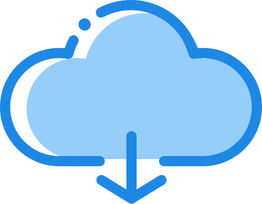

{% include 'zerver/portico-header.html' %}
{% block portico_content %}
{% if password_auth_enabled %}
{% endif %}
{% endblock %}
建筑施工智能化管理
建筑业是传统产业，长期处于粗放式的发展模式中。在长期的发展中，传统建筑业由于涉及 产业链和服务周期长，导致施工管理混乱，存在着诸多弊端。 “互联网+” 时代给建筑行业带来了新的可能性，这是个传统和前沿快速交替的年代。在此背 景下，e建联助力建筑行业转型升级，利用互联网的海量数据和技术进行建筑施工精细化、标准 化和智能化管理。

文件云端无限储存
e建联提供每个个人或企业用户 一个无线存储（大容量）的云 端网盘，帮您存储工作过程中 产生的所有资料文件。
项目远程实时管理
e建联拥有多个客户端，不管是 手机应用、网页、还是电脑客户 端，您都可以使用e建联来进行 线上管理，打破了区域地理位置 的限制。

项目远程实时管理
e建联拥有更灵活的考勤方式。 及便捷的审批。请假等功能,满 足您的企业人员管理。